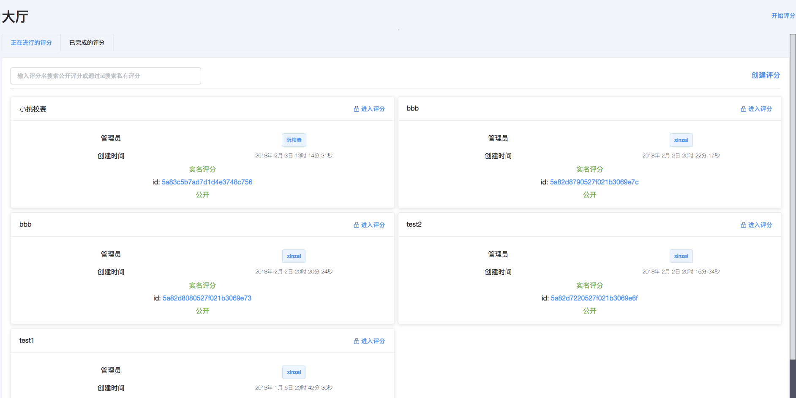
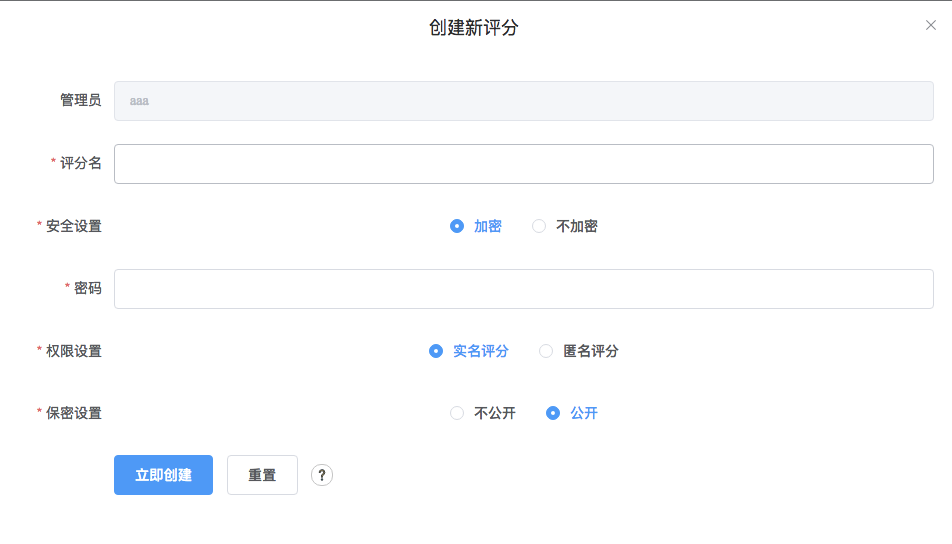
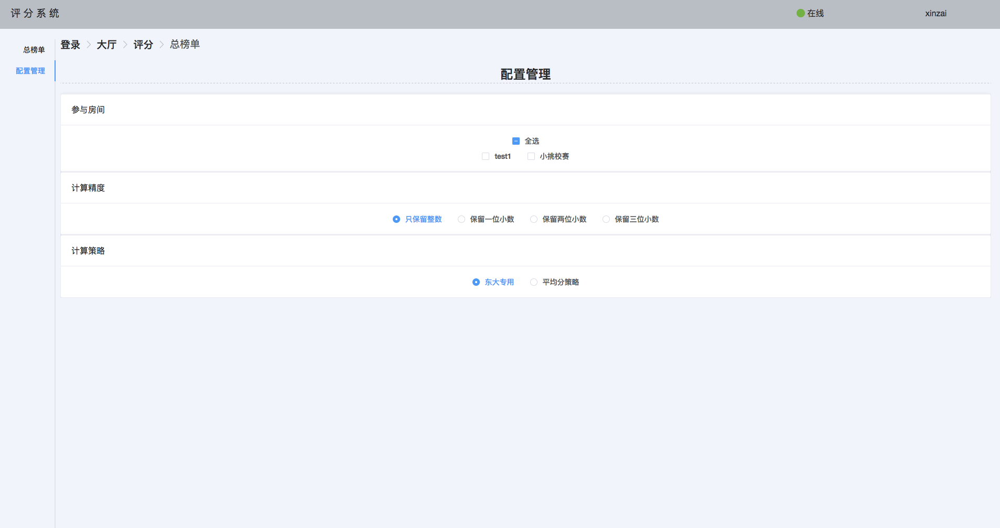
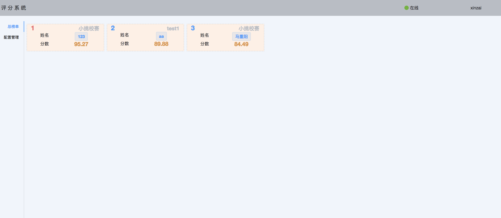

技术（使用者可忽略）
前端
技术栈
electron
vue 全家桶
lowdb
immutable
实现功能
基本表单的提交
配合后端实时获取触发或广播收到的数据，结合vue的数据驱动特性，完美的实现了实时的效果
使用immutable对复杂数据进行唯一性处理，防止意外修改
进行复杂数据中有效字段的获取，计算处理，得到有效数据
后端
技术栈
socket.io
mongodb
express
ejsExcel
实现功能
基本数据的存取
针对mongodb不支持事务的缺点，手动进行简单的数据回滚（表不多，没有使用二阶段提交）
基于EjsExcel实现了Excel导出的功能
使用手册（Mac环境）
基本操作
登录注册

注册需要提供邮箱，每个邮箱只能注册一个账号。本地保存的密码将经过加密，无法通过数据库文件直接获取密码
大厅

大厅中，会显示所有公开的评分工作，任何人都可以创建一个评分工作，都会在大厅中显示

点击创建评分我们可以创建一个评分，选择加密后，管理员可以创建密码，我们进入这个评分就需要输入密码了，如果选择不加密，则可以不输入密码直接进入评分。
选择实名评分后，我们会记录每个评委的打分情况，如果选择匿名评分，我们只会记录评委的临时id，不会记录真实用户名
在保密设置中，如果选择公开的话，这个评分就可以在大厅中找到，如果选择不公开的话，大厅中不会显示这个评分，普通人就不会知道有这个评分，更无法进入
如果需要找到一个匿名评分，必须拥有该评分的完整id，通过左上角的搜索按钮搜索该评分。
用户界面

点击右上角用户名会进入用户界面。这里会显示用户创建的所有评分，包括公开和未公开的评分，也只有在这里，才可以获取到一个未公开评分的id
评分界面

进入一个评分后会跳到评分界面，或者在大厅界面点击右上角开始评分，也会进入评分界面
评分是实时的，任何一个该评分组的评委评分，所有评委都会同步的进行改动，排名表也会同步的变动，
点击添加信息按钮，我们可以添加一个选手，添加后可以在选手信息界面删除该选手。
点击右侧榜单中你想要评分的选手的那一行，我们可以对该人进行评分，最高100分，最低0分
点击导出Excel可以导出这个评分组的评分信息
点击导入Excel可以批量导入选手信息
我们可以将某个选手广播给所有人，避免某些评委找不到这个选手
该榜单是以平均分进行排名的
总榜单

点击榜单右上的总榜单，我们可以来到总榜单界面，这个功能是为了主办方设计的，为了实时统计显示所有评分组的评分信息，并按照一定规则排名
我们在配置管理中可以调整总榜单数据的配置，我们可以选择参与总榜单排名的房间，选择最后分数的计算精度，选择计算分数的规则
平均分策略就是普通的计算一下每个评委对该人的平均分，然后排名
东大策略是，先计算平均分，然后算这个人在这个评分组中的权数，然后在计算出所有评分组的共同平均分，最后再用权数乘以平均分得到这个人最终的分数
